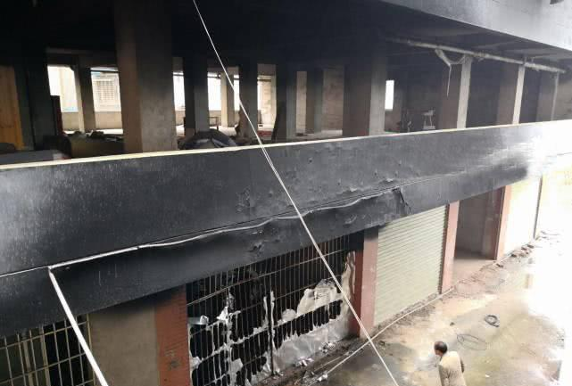

桂林市雁山区民房电动车火灾通报
2019年5月5日，雁山区雁山镇西龙村7号民房（广西师范大学漓江学院附近）发生火灾事故。事故已致5人死亡38人受伤，火灾遇难的为漓江学院大学生（2男3女，其中有一对双胞胎兄弟）。起火建筑为6层砖混结构村民自建房，总建筑面积约3000平方米，每层约500平方米，高度约18米，一层为门面，二层为空置房，三层至六层为出租房，毗邻建筑东、南、西面均为居民楼，北面为空地。起火部位位于1层，过火面积约28平方米，燃烧物质为电动车。又是一起电动车起火事故，今年3月13日凌晨在广西南宁市兴宁区发生火灾，棚内所有电动车（约300辆）被烧毁，另有20余辆汽车不同程度受损，所幸无人员伤亡。电动车火灾何时休？

电动车一旦发生火灾，火势极为迅猛。一组电动车火灾模拟实验显示：电动车一旦着火，90秒后温度便达到200度，转瞬间火灾迅速发展。作为逃生通道的楼道会被明火和浓烟堵塞，增加居民安全逃生的难度，而一台电动车燃烧产生的毒气足以使上百人窒息而亡！这就是为什么电动车火灾事故发生在建筑内的共用走道、楼梯间、安全出口处等公共区域往往是致命的。
桂林市安全生产委员会办公室就此次火灾事故下发三份文件：《桂林市安全生产委员会办公室关于迅速在全市范围内开展安全生产隐患大排查大整治行动的通知（市安委办〔2019〕17号）》、《桂林市安全生产委员会办公室关于迅速开展全市电动车停放充电场所消防安全专项整治的紧急通知（市安委办〔2019〕18号）》、《桂林市安全生产委员会办公室关于印发《全市出租屋和“三合一”场所消防安全专项治理工作方案》的通知（市安委办〔2019〕19号）》，其中关于电动车停放充电场所消防安全专项整治要求如下：
一、多部门联合加强源头监管
市场监管、公安等部门要联合加强对销售领域电动自行车及配件产品质量监管，组织对电动自行车销售企业、维修店及仓库等场所进行排查，杜绝不合格产品流入市场。严格核发电动自行车证照，严把市场入口关，对本地电动自行车生产、销售单位开展全面摸底排查，建立工作台账。对检查发现销售无合格证、伪造、冒用认证证书电动自行车及蓄电池、充电器等配件，销售无厂名、厂址等不合格电动自行车及蓄电池、充电器等配件，销售私自改装原厂配件、更换电瓶、拆除减速器等关键组件，违法销售存在安全质量问题的二手电动自行车和蓄电池，将回收、改装的电动自行车和蓄电池再次投入流通和使用领域的，相关部门要按照法律法规严肃查处。
二、立即组织开展消防安全网格化排查工作
各县（市、区）人民政府要立即组织各乡镇、街道办及居（村）民委员会、社区开展网格化排查工作，对出租屋、居民住宅小区开展集中排查治理。公安、住建、市场监管等部门要突出抓好对小商铺、小饭店、小作坊以及老旧居民区、城中村出租屋、“多合一”等场所的隐患排查整治，加大执法力度，清理违规住人、违规停放电动车，落实“四清一查”工作任务，即：小场所清违规住人，住宅楼道清违规停放电动车、摩托车和可燃、易燃杂物，住宅阳台清可燃杂物，消防通道清违规停放电动自行车、摩托车和障碍物；查违规用火、用电、用气、用油。排查整治的同时要通过广泛张贴电动自行车火灾防范通告，提高群众安全防范意识。
三、落实“人防、物防、技防”措施
“人防”方面，各乡镇、街道、社区要组建“有人员、有装备、有战斗力”的微型消防站。“物防”方面，各县（市、区）政府要加强居民住宅区电动车棚、车库建设，对条件受限、不能建设停车棚的，要进行防火分隔，形成相对独立的电动车停放充电场所，并配备灭火器、消火栓等。“技防”方面，推动电动车停放充电场所增设独立式火灾报警器、简易喷淋、安装智能充电桩等设施。
四、全面加强消防宣传教育
各县（市、区）要利用广播、电视、报刊、网站等新闻媒介和微博、微信等互联网信息平台，广泛刊播火灾警示案例和发送消防安全提示，大力宣传违规生产、销售、改装和使用电动自行车的危害，曝光违法违规行为和典型火灾事故；要组织综治、公安派出所、村（居）民委员会、社区工作人员等力量，深入社区、单位、沿街铺面、出租屋、群租房等场所宣讲电动自行车火灾危险性，普及扑救火灾、逃生自救和疏散技能等安全常识；要组织群众广泛张贴电动自行车火灾防范、火场逃生宣传图，在公共走道、楼梯间、门厅内张贴禁止电动自行车停放和充电标识，营造浓厚的消防安全氛围；要指导物业服务企业、村（居）民委员会等定期开展应急疏散演练，提升居民逃生自救能力。
电动车火灾猛于虎，安全防范是关键！
公安部《关于规范电动车停放充电加强火灾防范的通告》明确表示：严禁在建筑内的共用走道、楼梯间、安全出口处等公共区域停放电动车或者为电动车充电。
相关主题：
原文编辑: EHS资讯
原文链接: https://ehsinfo.cn/2019/08/12/漓江学院附近民房电动车火灾.html
版权声明: 转载请注明出处(必须保留作者署名及链接)